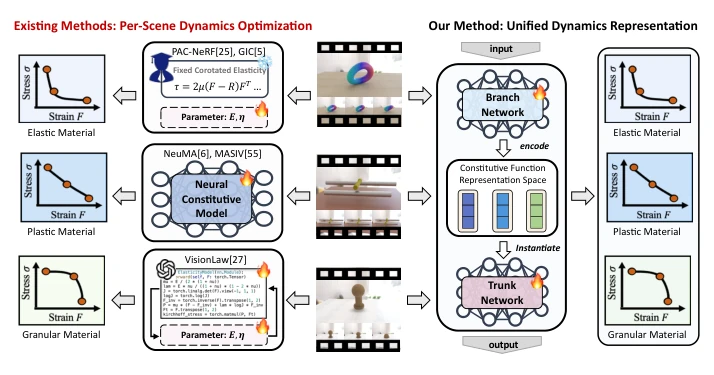
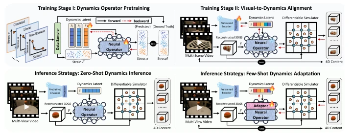
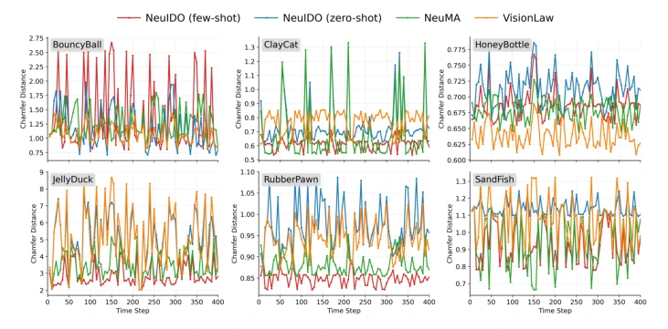
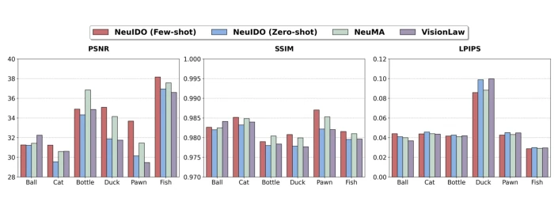
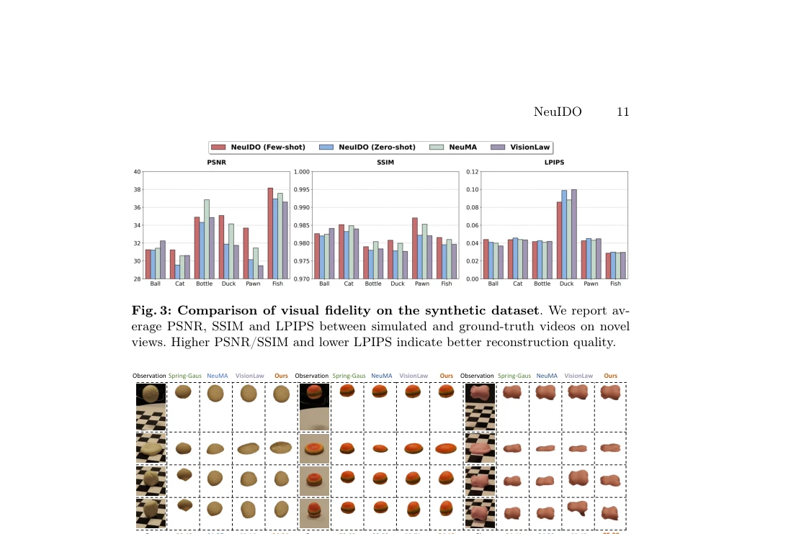
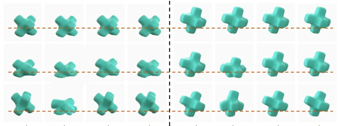
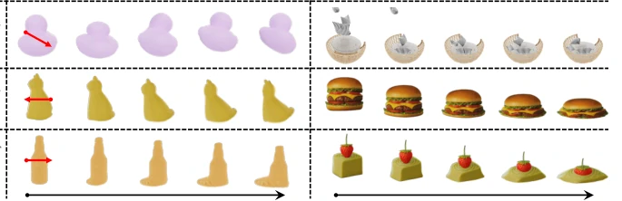
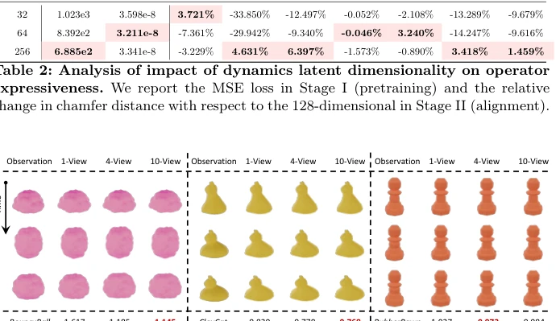
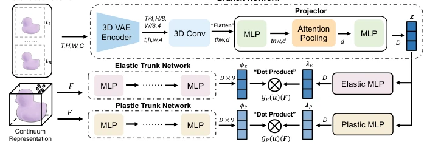

This work attempts to integrate 'physical simulation' and 'visual world models' using Neural Operators, an approach that is quite appealing. It is not satisfied with pure data-driven Sora-like models lacking physical constraints [3], nor with the cumbersomeness of per-scene optimization like PAC-NeRF [25]. However, its pre-training phase relies on known constitutive relations, essentially still finding patterns within 'known physical laws', remaining distant from true 'physical discovery'. Although Few-shot adaptation is practical, it increases inference complexity. Overall, it is a solid step towards general world models from physics-informed 4D generation, but do not expect it to guess unknown material properties out of thin air like human intuition.
Existing world models are mostly based on pure data-driven approaches, lacking physical constraints, leading to predictions violating conservation laws [20]. Although physics-informed 4D generation introduces simulators, it relies on manually set constitutive laws [29] or per-scene optimization [6], resulting in poor generalization. Although NeuMA [6] and VisionLaw [27] attempt to learn neural constitutive models, they infer per-scene independently, lacking shared structure. This paper aims to address this gap, achieving cross-scene generalization by unifying intrinsic dynamics representation, advancing physics-informed 4D generation towards true world models.

Fig. 1: Existing approaches typically perform per-scene dynamics optimization, which is computationally expensive and generalizes poorly to unseen scenes. In contrast, NeuIDO learns a unified intrinsic dynamics representation that enables efficient zero- shot generalization, moving physics-informed 4D generation toward world modeling.
方法Method
核心是将世界建模视为神经算子学习问题，采用 DeepONet 分支 - 主干架构。Pipeline 分两阶段：Stage I 在已知本构关系数据集上预训练主干网络，学习结构化动力学表示空间；Stage II 冻结主干，训练分支编码器将视频观测对齐到该空间。推理时，输入视频经编码器得到动力学隐变量，实例化本构函数驱动 MPM 仿真。支持 Zero-shot 直接推断，或插入 LoRA 适配器进行 Few-shot 微调以适配分布外场景。具体地，分支网络提取光流特征生成隐变量，主干网络参数化弹性与塑性基函数，两者线性组合输出本构响应。
The core is viewing world modeling as a neural operator learning problem, adopting a DeepONet branch-trunk architecture. The pipeline is divided into two stages: Stage I pre-trains the trunk network on a dataset with known constitutive relations to learn a structured dynamics representation space; Stage II freezes the trunk, training the branch encoder to align video observations to this space. During inference, the input video passes through the encoder to obtain dynamics latent variables, instantiating the constitutive function to drive MPM simulation. It supports Zero-shot direct inference, or inserting a LoRA adapter for Few-shot fine-tuning to adapt to out-of-distribution scenes. Specifically, the branch network extracts optical flow features to generate latent variables, the trunk network parameterizes elastic and plastic basis functions, and their linear combination outputs the constitutive response.

Fig. 2: Pipeline of NeuIDO. In Stage I, we pretrain the operator on a collection of known constitutive laws to learn a structured representation space of constitutive functions, injecting rich dynamics priors. In Stage II, we train a projector to align visual observations with this representation space, establishing a connection between videos and intrinsic dynamics. Under the zero-shot paradigm, the operator immediately infers plausible intrinsic dynamics for unseen scenes. Under the few-shot paradigm, lightweight adaptation further aligns the operator to out-of-distribution dynamics.

Fig. 10: Comparison of Chamfer Distance across different time steps on the synthetic dataset. NeuIDO achieves competitive performance under the zero- shot setting and further improves after few-shot adaptation, obtaining the best overall accuracy and stability in most scenarios.
Tested on the NeuMA synthetic set and Spring-Gaus real set. Metrics include Chamfer Distance (CD), PSNR, etc. Performance under Zero-shot is comparable to NeuMA [6], surpassing baselines like VisionLaw [27] after Few-shot. Ablation shows latent variable dimension affects expressiveness, multi-view supervision has marginal gains. Figure 5 shows unseen scene generalization, Figure 6 validates the effectiveness of dynamics transfer to new simulation conditions (e.g., different initial velocities), proving the model learned scene-independent intrinsic dynamics.

Fig. 3: Comparison of visual fidelity on the synthetic dataset. We report av- erage PSNR, SSIM and LPIPS between simulated and ground-truth videos on novel views. Higher PSNR/SSIM and lower LPIPS indicate better reconstruction quality.

Fig. 4: Comparison on real-world datasets. Quantitative metrics (i.e., PSNR) between the predicted and observed frames are reported in the bottom row. Our method achieves the best visual dynamics reconstruction.

Fig. 5: Generalization on unseen scenes. Quantitative metrics (PSNR ↑/ CD ↓) and qualitative results for two test scenes. The random baseline uses initialized dynam- ics latents randomly. NeuIDO produces dynamics close to the ground-truth observation in the zero-shot setting and further improves with few-shot adaptation.

Fig. 6: Transfer of modeled intrinsic dynamics to new simulation conditions. The left text indicates the intrinsic dynamics learned by NeuIDO. Left: Examples with different initial velocities (red arrows denote velocity directions). Right: Interactions with new simulation objects.

Fig. 8: Effect of multi-view supervision. Comparisons using 1, 4, and 10 input views during Stage II alignment. Chamfer distances are shown in the bottom row.

Fig. 9: Model Architecture. The branch network encodes an input video into a dynamics latent z using a 3D VAE encoder, 3D convolution, and an attention-based projector. The latent is mapped to coefficient vectors for elastic and plastic components. Two trunk networks take the deformation gradient F as input and output basis values. The final constitutive responses are obtained through dot-product interactions between the branch coefficients and trunk basis values.